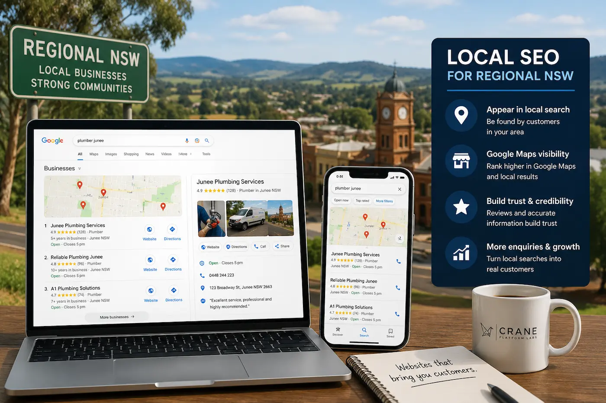

LOCAL SEO REGIONAL NSW
Local SEO & Google Maps Visibility for Regional NSW Businesses
Improve your Google rankings, Google Maps visibility and local customer enquiries with SEO-focused website design built for businesses across regional NSW.
Crane Platform Labs helps small businesses improve local visibility through fast, mobile-friendly websites, Google Business Profile optimisation and strong local SEO foundations.
Whether customers are searching through Google Search, Google Maps or “near me” searches, strong local SEO helps your business appear in front of nearby customers looking for your services.


WHAT IS LOCAL SEO?
Local SEO Helps Businesses Appear on Google
Local SEO helps businesses appear in Google Search, Google Maps and “near me” searches when customers look for local services.
A strong local SEO setup improves online visibility and helps local customers find your business before competitors when searching for nearby services.
Local SEO combines website structure, Google Business Profile optimisation, mobile-friendly design, location relevance, reviews and customer trust signals to improve rankings.
Businesses across regional NSW can improve Google visibility through fast-loading websites, strong local content and properly structured SEO foundations.
COMMON SEO PROBLEMS
Why Businesses Struggle to Rank on Google
Many small businesses across regional NSW struggle to appear on Google because their websites and local SEO foundations are weak, outdated or poorly structured.
Weak Website Structure
Many websites are difficult for Google to understand because pages are poorly organised, missing important information or lacking proper SEO structure.
Slow Website Speed
Slow-loading websites create poor user experience, increase bounce rates and may negatively affect Google rankings and customer enquiries.
Poor Mobile Experience
Most local searches now happen on mobile phones, making responsive website design critical for both SEO and customer experience.
Weak Google Business Profiles
Incomplete or poorly optimised Google Business Profiles reduce visibility in Google Maps and local search results.
Low Local Relevance
Businesses without local SEO structure, location pages or regional relevance often struggle to appear for nearby searches.
Lack of Trust Signals
Google reviews, professional websites, accurate business information and clear branding help build customer trust and local authority.
WHAT HELPS SEO
What Helps Businesses Rank Higher on Google?
Strong local SEO combines website performance, Google Business optimisation, mobile usability and customer trust signals to improve online visibility.
Mobile-Friendly Websites
Responsive websites improve user experience across phones, tablets and desktops while helping businesses perform better in Google Search.
Google Business Profiles
Optimised Google Business Profiles improve Google Maps visibility, local rankings and customer trust.
Fast Website Performance
Fast-loading websites improve user experience, reduce bounce rates and support stronger SEO performance.
Location Pages
Dedicated local landing pages help businesses appear in searches across regional NSW towns and nearby service areas.
Customer Reviews
Reviews help build credibility, improve local trust signals and strengthen Google Maps visibility.
Strong Website Structure
Clear page hierarchy, internal linking and organised content help Google better understand your services and locations.
Businesses across Wagga Wagga, Albury, Junee, Griffith, Temora and Cootamundra can improve local SEO through better website structure, stronger Google Business Profiles and consistent local relevance.

REGIONAL NSW SEO
Built for Regional NSW Businesses
Local SEO for regional businesses is different from large city competition and focuses heavily on local trust, visibility and community relevance.
Small businesses across regional NSW benefit from strong local SEO because customers often search for nearby services using Google Search and Google Maps before making contact.
A properly optimised website combined with a strong Google Business Profile can help businesses appear higher in local search results and improve customer enquiries.
Crane Platform Labs works with businesses across Junee , Wagga Wagga , Albury , Griffith , Temora and Cootamundra to improve local visibility, Google rankings and customer trust.
Regional NSW businesses often have strong opportunities to compete online because local competition is smaller and strong SEO foundations can make a major difference.
IMPROVE YOUR GOOGLE VISIBILITY
Need Help With Local SEO or Google Maps Rankings?
Crane Platform Labs helps regional NSW businesses improve Google rankings, Google Maps visibility and customer enquiries with SEO-focused website design.
Whether your business is struggling to appear on Google, losing visibility to competitors or not generating enough enquiries online, strong local SEO foundations can make a significant difference.
We build fast, mobile-friendly websites designed to improve local visibility and help businesses across regional NSW appear in Google Search, Google Maps and “near me” searches.